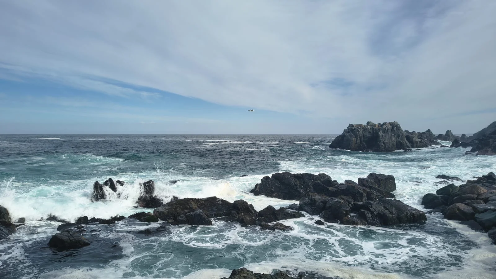
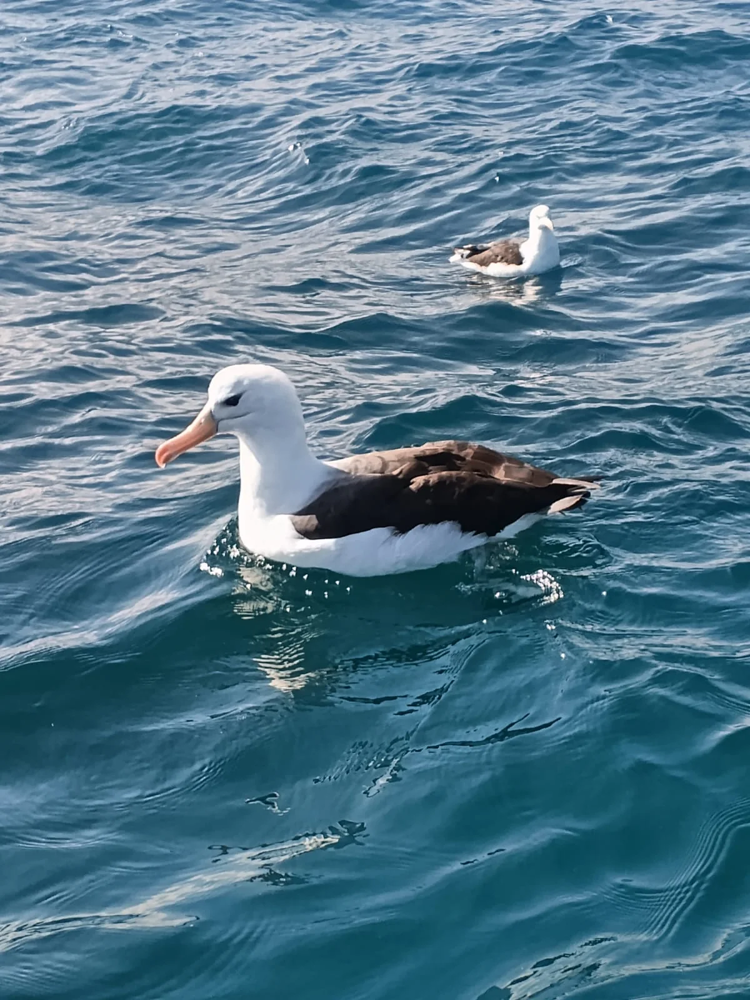
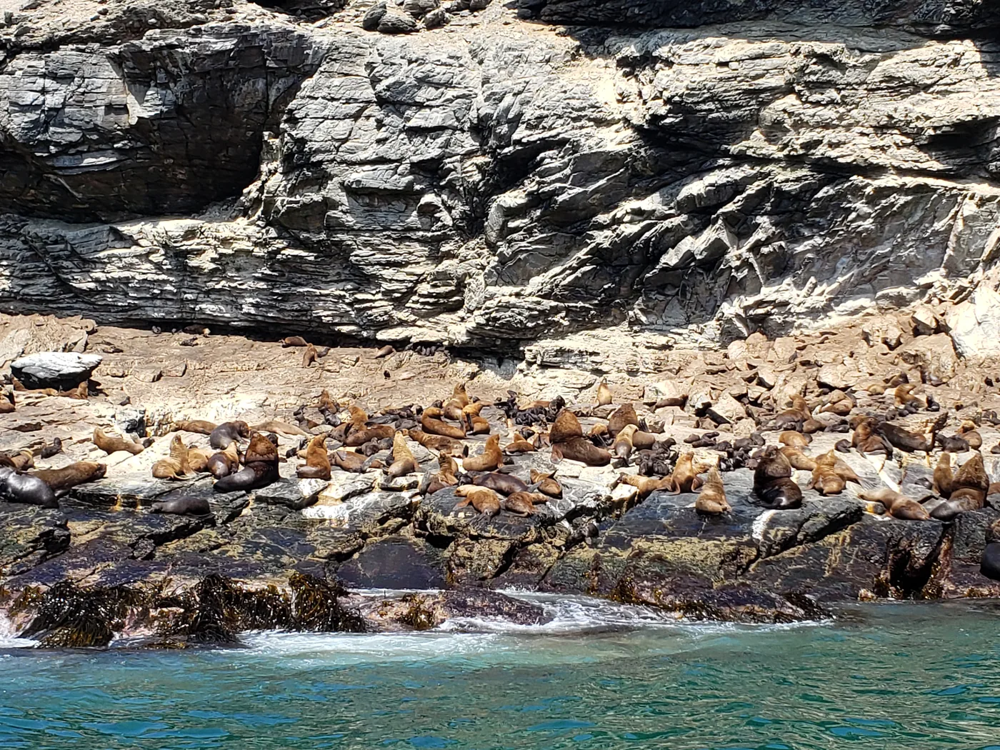
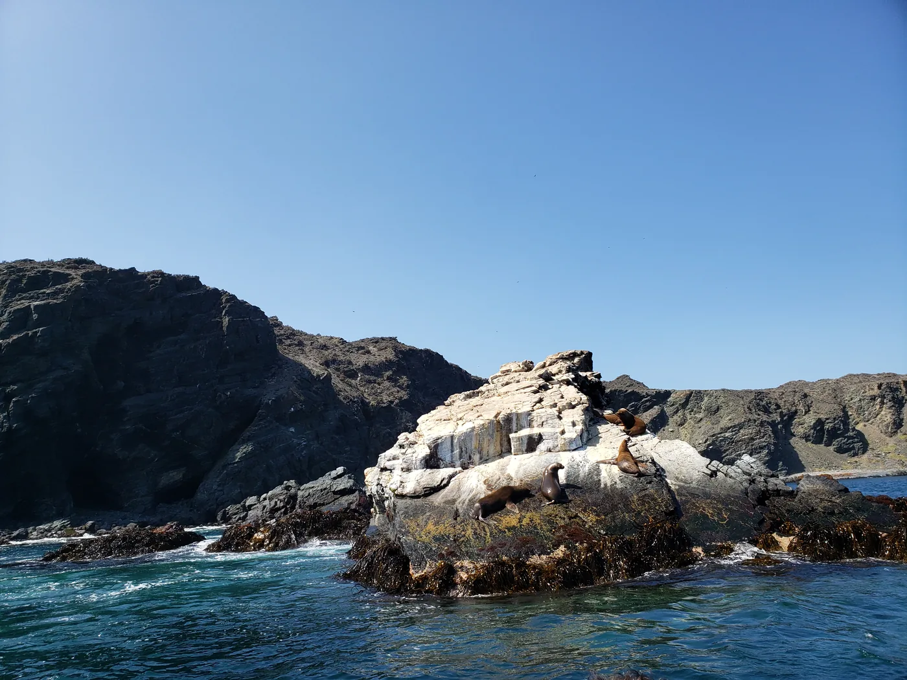
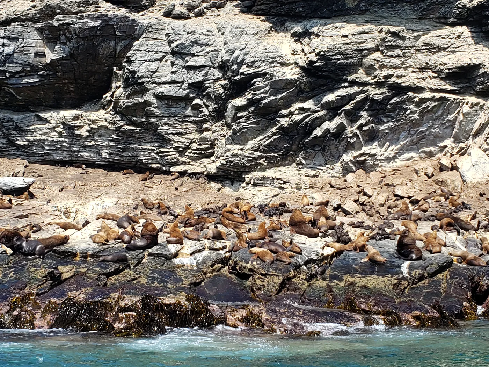
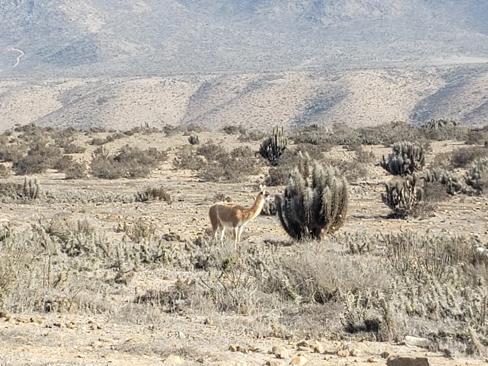

Aquí irá la primera columna
Este espacio está listo y esperando el primer texto. Cada quince días se publica aquí una nueva entrega.
Chungungo · La Higuera · Región de Coquimbo
Uno de los ecosistemas marinos más ricos del Pacífico Sur, frente a la costa de La Higuera. Y una fundación que construye ahí un museo de arte.
La corriente de Humboldt, las islas y la costa de La Higuera forman aquí un sistema que sostiene vida marina, pesca artesanal y conocimiento científico.
Es un reservorio de biodiversidad: especies endémicas y redes tróficas que sostienen la pesca artesanal de la zona. Y es también un regulador del clima, porque la corriente de Humboldt trae aguas frías y nutrientes que se traducen en alta productividad primaria y en un océano más sano. A eso se suma su valor científico y cultural: un laboratorio natural para la investigación marina y, al mismo tiempo, un territorio habitado por comunidades costeras desde hace generaciones.
Los datos científicos informan; el arte mueve. Un museo convierte lo que sabemos del archipiélago en algo que se siente. Las instalaciones y las obras participativas hacen comprensibles procesos ecológicos complejos, a cualquier edad, y vuelven visibles amenazas como la sobrepesca y el cambio climático —y también el trabajo de quienes las enfrentan.
Un museo, además, mueve la economía local: visitantes y residencias artísticas abren trabajo para artesanos, pescadores y guías de Chungungo. Por eso el proyecto no es solo un edificio, sino una forma de quedarse en el territorio.

Colonias de lobos marinos, albatros, pelícanos, guanacos del desierto costero y la caleta Chañaral de Aceituno. Fotografías propias, tomadas en el archipiélago y su costa.










Desliza para ver más · toca una foto para ampliarla
Una mirada periódica al archipiélago, su gente y lo que está en juego en esta costa.
Este espacio está listo y esperando el primer texto. Cada quince días se publica aquí una nueva entrega.
La Fundación Archipiélago de Humboldt trabaja para proteger este ecosistema y para levantar en Chungungo un museo de arte inspirado en él. Lo estamos construyendo.
Adrián, sobre el proyecto del museo
El proyecto se sostiene con el trabajo de mucha gente, y siempre hay espacio para una más.
Colaboran con nosotros voluntarios locales y de otras regiones de Chile, que aportan tiempo y trabajo al proyecto; profesionales de las ciencias y la investigación, que estudian el archipiélago y su ecosistema; e iniciativas culturales independientes, proyectos y colectivos que trabajan junto a la fundación.
Envíanos tu foto del Archipiélago de Humboldt, su costa y su biodiversidad. La única regla es que sean fotos tuyas. Registra tu nombre de autoría y pasa a ser parte de este proyecto: las fotos seleccionadas se publican en el sitio con tu crédito.
Enviar mi fotoEl museo se levanta con aportes de quienes se interesan por este ecosistema. Puedes ser uno.
Ubicación
Chungungo, comuna de La Higuera
Región de Coquimbo, Chile
A 67 km al norte de La Serena por la Ruta 5 Norte, luego ruta costera hacia Chungungo.
Preguntas, colaboraciones, programas educativos o residencias artísticas: